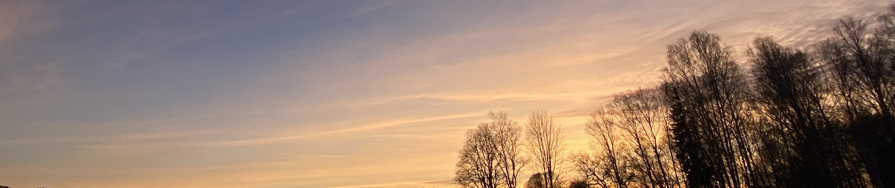
Привет жопа)
Прости, но я это сделал. Я так был счастлив от своей записочки и фотографий на свой день рождения, что я просто не мог не сделать что то похожее для тебя. Ещё раз прости, но раз уж оно перед тобой - посмотри пожалуйста(
Это ведь не нарезка!
.
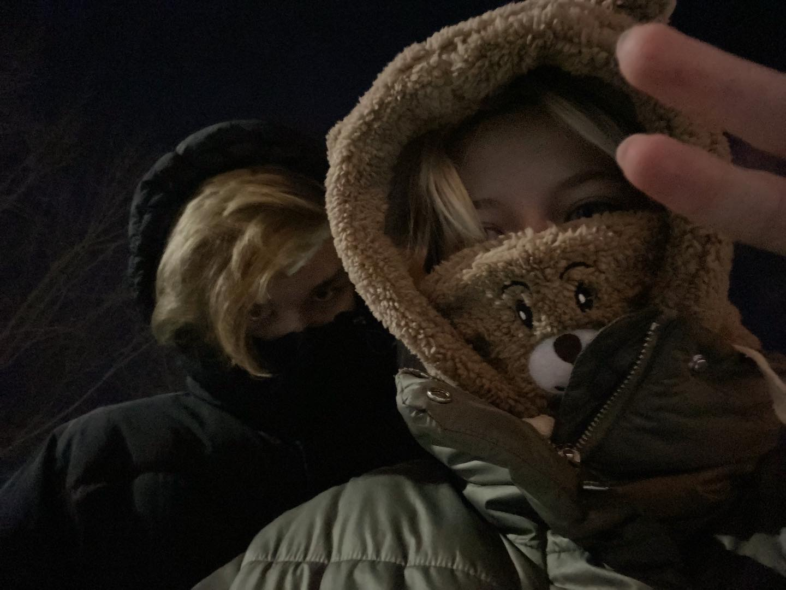
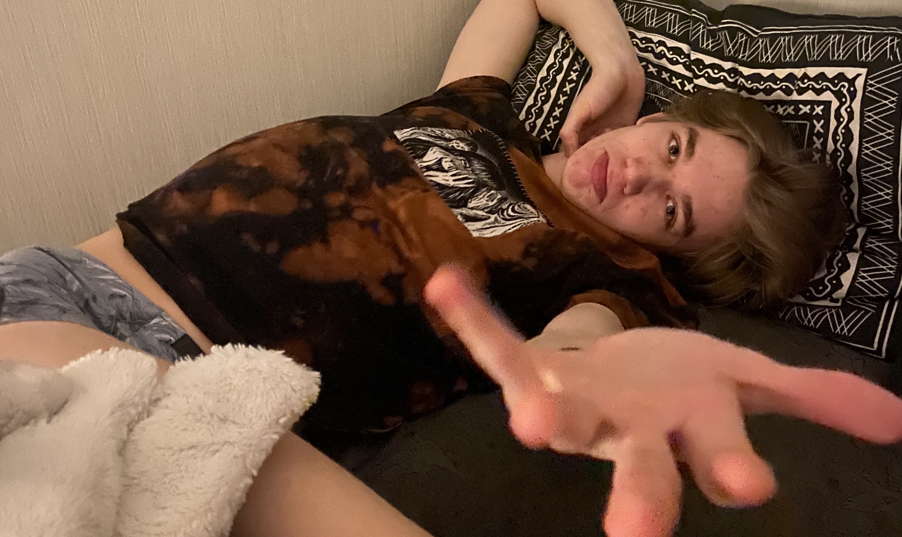
Я прямо сейчас это пишу, валяясь на кровати, а ты играешь в геншин:) Благодаря тебе наелись вкусных онигири, довольные. Ты меня конечно спалила и я теперь жутко боюсь это все делать, но куда деваться. Надеюсь у меня получится сделать красивое поздравление для тебя и тебе понравится. Хотя как тебе блин может не понравится?!
Если ты это читаешь, то я, видимо, последние три дня вообще ничего кроме этого не делал, извини, если мало уделял времени, ведь все было потрачено на это ❤
Вот уже почти год мы с тобой вместе, котик. И сегодня ты почти на год старше, чем тогда, когда мы с тобой встретились в первый раз. Так прикольно выходит, что мое день рождение ассоциируется у меня с Новым годом, а твоё будет с нашей годовщиной с:
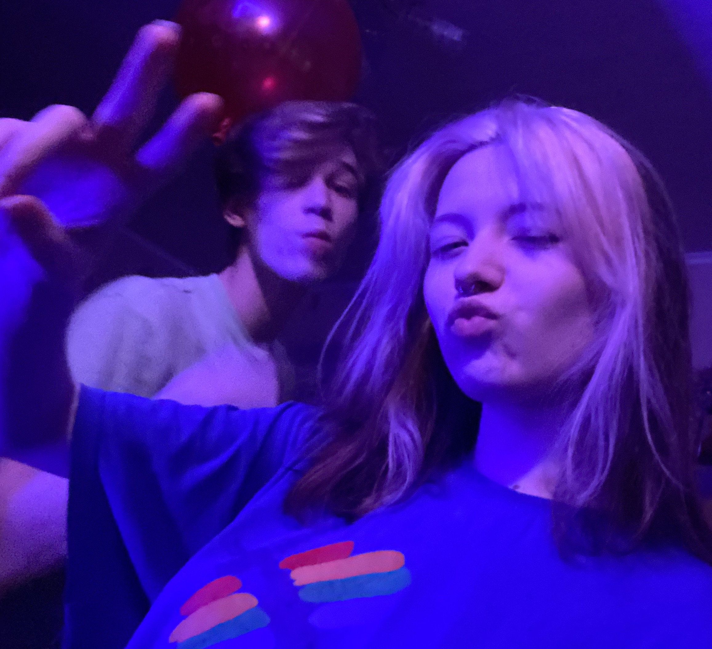
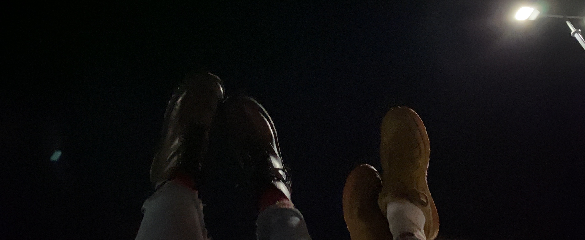
Этот год был не похож на все остальные для тебя, как и для меня. Все, что происходило, это определенно переломный момент в наших жизнях. Теперь всё по другому. Ты, мой маленький комочек счастья, стала намного взрослее, мудрее и сильнее. Ты и до этого всегда была сильной, а теперь стала ещё круче, и ещё теперь у тебя есть я.
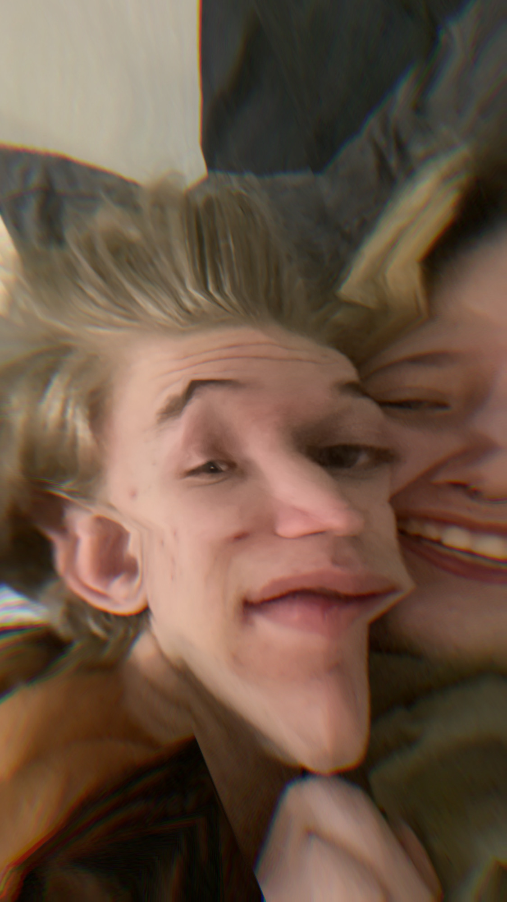
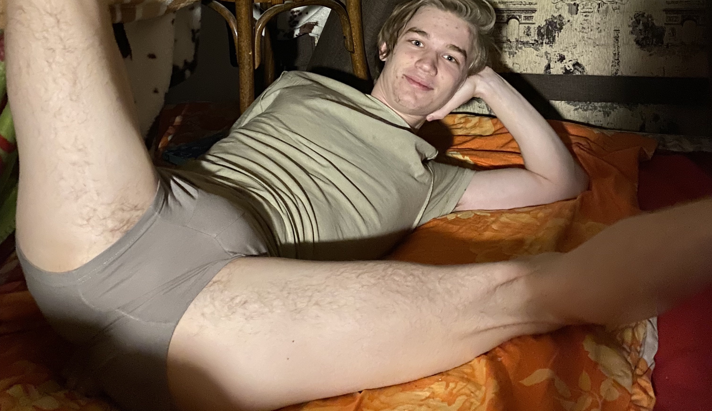
Я благодарен этой жизни, судьбе, тебе, вообще всей Вселенной, что мы встретились и что мы вместе. Я безумно счастлив просыпаться рядом с тобой, кушать с тобой, держаться с тобой за руки, играть вместе, дышать, гулять, трахаться, нюхать какашки, сосать хуйчик, дрочить, пердеть и дристать говнищем. И всё-всё остальное.
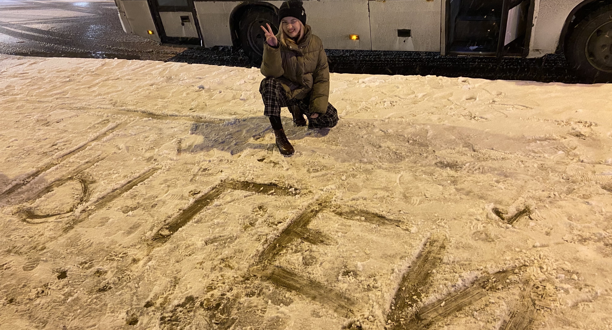
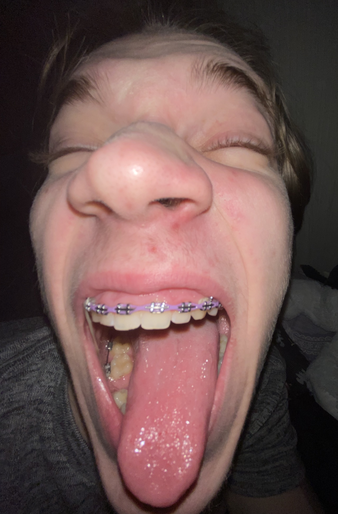
Женечка. Женя. Солнышко. Буся моя. Хоть этот день и самый обычный для тебя, но для меня это годовщина появления тебя на свет. Пусть ты иногда проклинаешь это событие, но для меня оно всегда будет самым настоящим чудом, ведь я люблю тебя больше жизни.
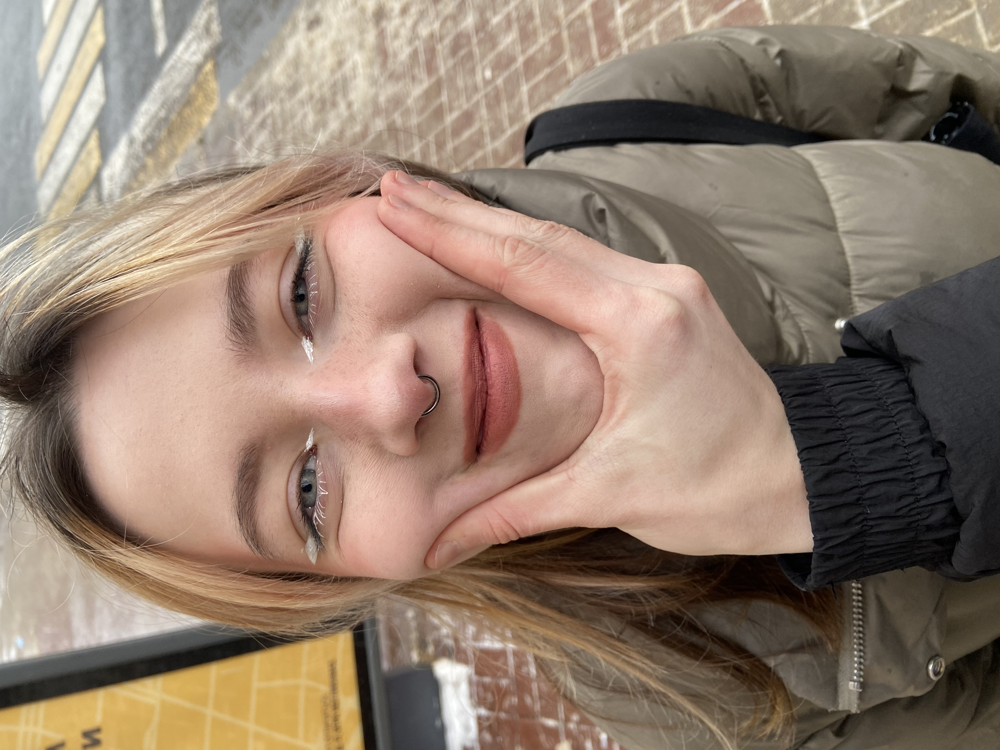
Все становится только лучше, по крайней мере всё то, что тебе подвластно. Ты прекрасно выглядишь, уже очень много времени держишься и не селфхармишься, не КПшишь и не голодаешь. Ты хорошо кушаешь и даже иногда мы занимаемся спортом! Твоё психическое состояние маленькими шажками нормализуется. Ты хоть и боишься, но каждый раз стараешься, берёшь себя вновь и вновь в руки и делаешь то, что тебе интересно, пробуешь что-то новое и продолжаешь старое. Я так рад, что ты снова начала заниматься японским. Ты чудесно рисуешь. Не продала синтезатор и надеюсь будешь ещё на нем играть. Снимала тиктоки, пока тикток не заблокировали. Даже такую модельку крутую сделала! Надеюсь скоро и стримить начнёшь, кто его знает:)
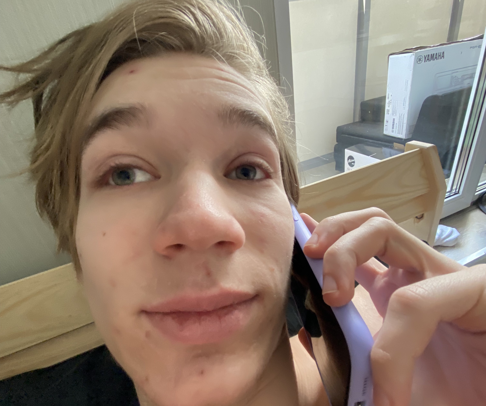
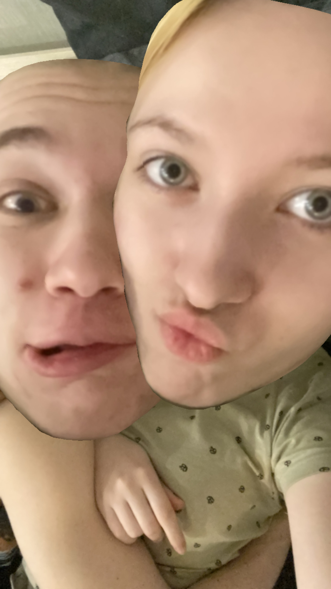
Конечно, бывают тяжелые моменты, но ты и сама знаешь, что без них никак. Ты все равно самая крутая и вообще смотри какой я ржачный зани ща во мне ощущаю себя лавели
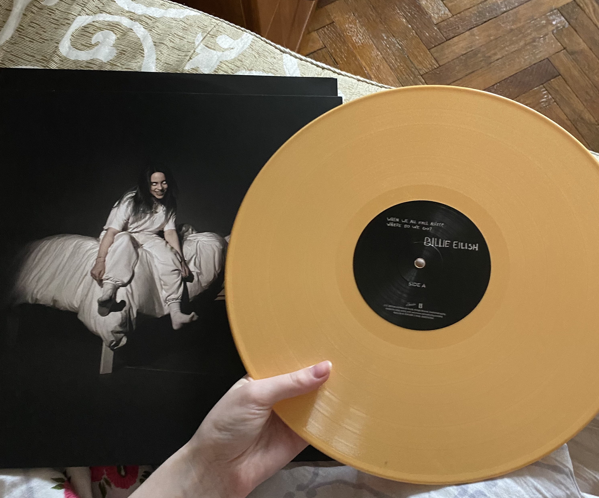
Теперь ты можешь послушать на проигрывателе твою любимую исполнительницу (и мою теперь тоже). Она ведь всегда с тобой в твой день рождения 🙃
Пупс, ты только представь, все это только за год. Ты понимаешь, сколько всего нас ждёт впереди? Миллионы счастливых моментов вместе, миллиарды долларов, яхты, особняки и даже остров с кучей маленьких котиков которых мы будем очень очень любить и охранять от всего на свете. Прямо как мы друг друга.
Спасибо
за то, что всё ещё находишь в себе силы, чтобы улыбаться
за понимание
за поддержку в трудную минуту
за твою заботу
за то, что готова на всё ради своих близких
за то, что ты всегда рядом
за твою искреннюю доброту
за помощь всегда и во всём
за твою любовь
за то, что ты есть
Ты ведь знаешь, я даже без денег не мог бы оставить тебя без подарочка в твой день рождения. Это был бы просто не я. Поэтому будь любезна, обними меня хорошенько за то что я у тебя такой крутой и любящий!!! На фоне кстати наша первая совместная фотка:)
Твой зайка.